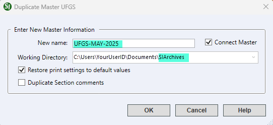

How Do I Keep my copies of the UFGS Masters?
The Whole Building Design Guide (WBDG) only offers the current UFGS Master release in SpecsIntact (.sec) format. This is to ensure users are always working with up-to-date specifications. When managing multiple projects, you might need to refer to older UFGS Master specifications. To accommodate this, we suggest setting up a SpecsIntact (SI) archived Working Directory where you can safely store inactive Jobs and Masters.
Step 1: Create an archived working directory
Follow the instructions provided in the FAQ Archive Inactive Projects topic.
Step 2: Duplicate the UFGS Master
- In the SpecsIntact Explorer, right-click on the UFGS Master and select Duplicate Master
- In the Duplicate Master UFGS window, type the New name in the field (e.g., UFGS-MM-YYYY or UFGS-MMM-YYYY)

- Select the drop-down arrow in the Working Directory field to select the SIArchives Working Directory path
- Select Restore print settings to default values
- Deselect Duplicate Section comments
- Click OK
 You can then follow Step 3 in the Archive Inactive Projects instructions to learn how to show or hide the archived Working Directory.
You can then follow Step 3 in the Archive Inactive Projects instructions to learn how to show or hide the archived Working Directory.